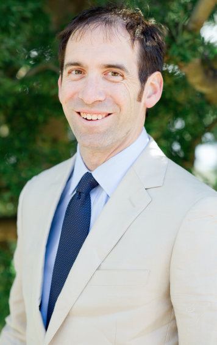
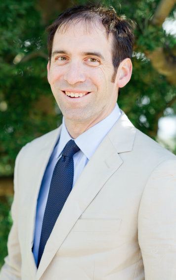

Nick Feamster
University of Chicago
Nick Feamster is Neubauer Professor of Computer Science at the University of Chicago, where he directs the Network Operations and Internet Security Lab. Previously, he was a full professor in the Computer Science Department at Princeton University, where he directed the Center for Information Technology Policy (CITP); prior to Princeton, he was a full professor in the School of Computer Science at Georgia Tech. His research focuses on many aspects of computer networking and networked systems, including network operations, network security, applications of machine learning to networking, and censorship-resistant communication systems. He is a Fellow of the Association for Computing Machinery (ACM).
He received his Ph.D. in Computer Science from MIT in 2005, and his S.B. and M.Eng. degrees in Electrical Engineering and Computer Science from MIT in 2000 and 2001, respectively. He was an early-stage employee at LookSmart, a directory-based Internet search engine later acquired by AltaVista, where he wrote the company's first web crawler. His work on Internet codecs and streaming protocols in the late 1990s led to one of the first streaming video systems to transmit live television over the Internet. In the 2000s, he invented technologies that became the basis of AI-driven network security, and separately developed foundational work that led to Software Defined Networking (SDN). He was also an early employee at Damballa, where he helped design the company's first botnet-detection algorithm.
Nick has extensive experience as an expert witness, serving as both a consulting and testifying expert with deposition and federal trial testimony experience in software patent, copyright, trade secrets, and privacy law. He has experience with patent monetization and defense, including litigation and trial experience as well as IPR proceedings. He has testified in federal court multiple times in several cases that reached favorable verdicts. His expertise includes AI models, machine learning, copyright, access control, anomaly detection, distributed systems, video technologies (streaming and codecs), and software defined networking.
His work has been adopted by industry and led to several startup companies. He is one of the Top 20 most cited researchers in Computer Networking and, with Andrew Tanenbaum, has co-authored one of the most popular networking textbooks in the world. At Georgia Tech, he was a founding instructor in what is now the largest online Computer Science MS degree program in the world, generating over 10% of the new MSCS degrees awarded in the US annually.
In 2008, Nick received the Presidential Early Career Award for Scientists and Engineers (PECASE) for his contributions to cybersecurity, notably spam filtering. His other honors include the Technology Review 35 "Top Young Innovators Under 35" award, the ACM SIGCOMM Rising Star Award, a Sloan Research Fellowship, the NSF CAREER award, the IBM Faculty Fellowship, the IRTF Applied Networking Research Prize, and award papers at ACM SIGCOMM (network-level behavior of spammers), the SIGCOMM Internet Measurement Conference (measuring Web performance bottlenecks), USENIX Security (circumventing web censorship, web cookie analysis), and USENIX Networked Systems Design and Implementation (fault detection in router configuration, software-defined networking). His seminal work on the Routing Control Platform won the USENIX Test of Time Award for its influence on Software Defined Networking.
Nick is an avid distance runner, having completed more than 20 marathons, including Boston, New York, and Chicago, finishing as top-10 American at the Comrades Marathon, the world's largest ultramarathon. He also writes, produces, and performs music, playing guitar and vocals in various projects. He lives in Chicago, Illinois.